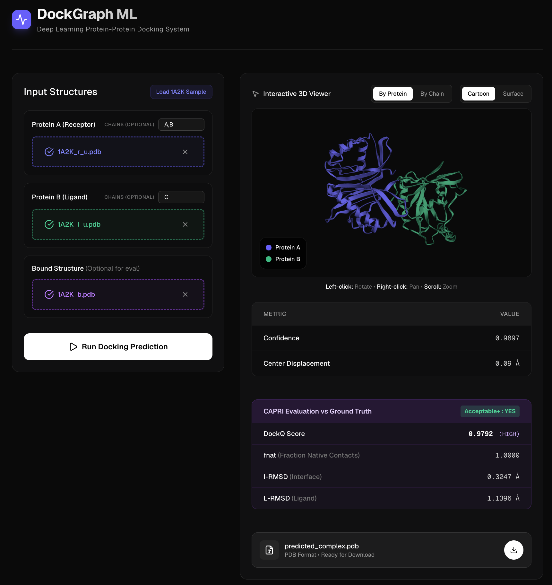
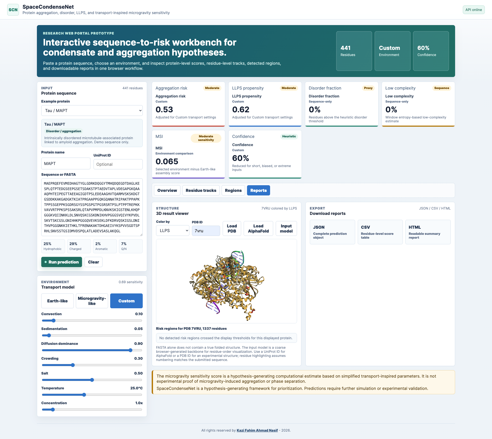

Kazi Fahim Ahmad Nasif
Ph.D. Candidate, Computer Science
Kennesaw State University, Marietta, Georgia, USA
Advisor: Dr. Bobin Deng
Research Interests: Bioinformatics, World Models, LLMs, Computer Vision, Edge Computing
I am actively seeking tenure-track Assistant Professor and postdoctoral positions, starting Fall 2027.

Publications
Full list on Google Scholar.
2026
- "MM-JEPA-TC: Low Cost Multimodal Joint-Embedding Predictive Architecture for Tropical Cyclone Forecasting", 2026 IEEE International Conference on Systems, Man, and Cybernetics, 2026. (IEEE SMC 2026) (Accepted)
- "AffinityBERT: Sequence-Based Deep Learning for Structure-Free Protein Binding Prediction", 2026 IEEE International Conference on Systems, Man, and Cybernetics, 2026. (IEEE SMC 2026) (Accepted)
- "Lowering Inference Latency of Hyperdimensional Computing for Camera Frame Inputs via Pixel Differential Compression", 2026 8th International Conference on Artificial Intelligence Technologies and Applications, 2026. (ICAITA 2026) (Accepted)
- "Extreme Parameter Efficiency in Quantum Machine Learning for Cervical Cancer Classification", 48th Annual International Conference of the IEEE Engineering in Medicine and Biology Society. (IEEE EMBC 2026) (Accepted)
- "Mechanistic Validation and Structural Analysis of PAH-Associated SOX17 for Real-World Relevance", The 14th IEEE International Conference on Healthcare Informatics, Minneapolis, USA, 2026. (IEEE ICHI 2026) (Accepted)
2025
- "AccelMD: A Self-adaptive AI-enabled Framework for Accelerating Molecular Dynamics Simulations", The 37th IEEE International Conference on Tools with Artificial Intelligence, 2025. (ICTAI 2025)
- "Automatic Molecular Dynamics Simulation with Binding Affinity Prediction Using Deep Learning", The 37th IEEE International Conference on Tools with Artificial Intelligence, 2025. (ICTAI 2025)
- "Multimodal Deep Learning for Alzheimer's Disease Classification: A Practical Fusion Framework for Clinical Deployment", The 37th IEEE International Conference on Tools with Artificial Intelligence, 2025. (ICTAI 2025)
- "Optimizing CDN Architectures: Multi-Metric Algorithmic Breakthroughs for Edge and Distributed Performance", International Conference on Computing, Networking and Communications, 2025. (ICNC 2025)
2024
- "Activation Sparsity Opportunities for Compressing General Large Language Models", The 43rd IEEE International Performance Computing and Communications Conference, 2024. (IPCCC 2024)
- "Revolutionizing Image Recognition: Next-Generation CNN Architectures for Handwritten Digits and Objects", IEEE Symposium on Wireless Technology & Applications, Kuala Lumpur, Malaysia, 2024. (ISWTA 2024)
- "AI-Driven Deep Learning Techniques in Protein Structure Prediction", International Journal of Molecular Sciences 25, no. 15: 8426, 2024. (MDPI 2024)
- "Predicting Protein-Protein Binding Affinity with Deep Learning: A Comparative Analysis of CNN and Transformer Models", The 36th IEEE International Conference on Tools with Artificial Intelligence, 2024. (ICTAI 2024)
2019
- "Order Dependency in Sequential Correlation", The 3rd International Conference on Electrical, Computer & Telecommunication Engineering, 2019. (ICECTE 2019)
Manuscripts Under Review
- Kazi Fahim Ahmad Nasif, Lingtao Chen, Yixin Xie, Bobin Deng. "DockGraph: Fast Protein-Protein Docking Refinement with a Dual-Encoder Graph Neural Network." Submitted to CIKM 2026.
- Kazi Fahim Ahmad Nasif, Lingtao Chen, Priyabrota Sen, Yifan Liu, Michael Sierks, Bobin Deng, Yixin Xie. "Beyond Point-World Reasoning: Certified Decisions Under Uncertain Perception." Submitted to ICASSP 2027.
- Kazi Fahim Ahmad Nasif, Lingtao Chen, Priyabrota Sen, Yifan Liu, Kewei Chen, Bobin Deng, Yixin Xie. "Marginal Coverage Is Not Enough: Evaluating Conformal Prediction in Ordinal Medical Imaging." Submitted to ICASSP 2027.
- Lingtao Chen, Kazi Fahim Ahmad Nasif, Yifan Liu, Bobin Deng, Yixin Xie. "AffinitySym: Sequence-based Interpretable Protein-Protein Binding Affinity Prediction." Submitted to ICLR 2027.
- Priyabrota Sen, Bobin Deng, Kazi Fahim Ahmad Nasif, Patrick Bobbie, Liang Zhao, Sahidul Islam, Kun Suo, Yixin Xie. "DOR-JEPA: Difficulty-Ranked Slot Masking for Causal World Model Learning." Submitted to ICASSP 2027.
Patent
-
"Systems and Methods for Using Edge Devices in Multi-Modal Vision Models",
Provisional Patent Application, Registration No. 52494, Docket No. 62941.2834, InComm Payments, 2024.
(Filed)
Role: Lead Inventor
Innovation: A low-cost multimodal computer vision system for real-time customer behavior analysis through multi-view emotion, gaze, hand-interactions and product detection, deployed on an edge device.
Research Prototypes
-

DockGraph is a fast and interactive research prototype for graph-based protein-protein docking for near-native protein-protein pairs.
Open prototype -

SpaceCondenseNet is a web-based space protein research tool for predicting and visualizing how proteins may aggregate, phase-separate, and study the protein-protein interactions under microgravity-inspired transport conditions.
Open prototype
Education
Ph.D. in Computer Science
Kennesaw State University, Marietta, Georgia, USA
Passed Ph.D. candidacy - Spring 2026
Aug 2023 – Present
Kennesaw State University, Marietta, Georgia, USA
Passed Ph.D. candidacy - Spring 2026
MS in Applied Statistics & Data Science
Jahangirnagar University, Dhaka, Bangladesh
Sep 2019 – Oct 2021
Jahangirnagar University, Dhaka, Bangladesh
BEng. in Computer Science & Engineering
Rajshahi University of Engineering and Technology (RUET)
Apr 2014 – Sep 2019
Rajshahi University of Engineering and Technology (RUET)
Research & Professional Experience
Graduate Research Assistant
Kennesaw State University, Marietta, Georgia
Aug 2023 – Present
Kennesaw State University, Marietta, Georgia
- Bioinformatics: Develops resource-efficient tools for molecular dynamics and protein-protein docking.
- World Models: Develops energy-efficient meteorological forecasting frameworks for resource-constrained edge devices.
- Physical AI: Builds secure multimodal computer vision systems for real-time local inference.
- Explainable AI: Builds robust decision-support systems for critical applications under uncertainty.
Research Assistant
InComm Payments
Aug 2024 – Jul 2025
InComm Payments
- Developed energy-efficient multimodal vision systems for customer behavior analysis, planogram design, shelf optimization, and edge-device deployment.
Graduate Research Assistant
Food First
Aug 2024 – Present
Food First
- Develops scalable data systems and customized AI tools for website management, traffic analysis, and recommendation-driven preference modeling.
Teaching & Mentoring
Guest Lecturer
IT 3503 - Foundations of Health Information Technology, Kennesaw State University
Fall 2026
IT 3503 - Foundations of Health Information Technology, Kennesaw State University
- Delivered a guest lecture on using AI ethically and safely for academic research in clinical decision-support systems.
Graduate Research Mentor
Kennesaw State University
Kennesaw State University
- Mentored three M.S. students on externally funded projects across research design, technical implementation, and dissemination.
Actuarial Analyst
Guardian Life Insurance Limited, Dhaka, Bangladesh
Nov 2021 – Jul 2023
Guardian Life Insurance Limited, Dhaka, Bangladesh
Trainee Programmer
Sysnova Information Systems, Bangladesh
Mar 2019 – Jun 2019
Sysnova Information Systems, Bangladesh
Awards & Achievements
- KSU College of Computing and Software Engineering 4.0 Club — four consecutive semesters (Fall 2023, Spring 2024, Summer 2024, Spring 2025)
- Travel Grants, Kennesaw State University — to attend conferences in 2024, 2025, and 2026
- Bangladesh-Sweden Trust Fund Scholarship — 2024
- Technical scholarship for undergraduate excellence, RUET — 2014–2015
- First Prize, Cybersecurity Training, Guardian Life Insurance, Dhaka, Bangladesh — March 2022
Academic Service & Leadership
Peer Review
- Reviewer, IEEE Internet of Things Journal — Web of Science Profile
- Reviewer, 34th International Conference on Artificial Neural Networks (ICANN)
- Reviewer, 37th IEEE International Conference on Tools with Artificial Intelligence (ICTAI 2025)
Editorial & Program Committees
- Technical Program Committee Member, 37th IEEE ICTAI 2025
- Session Chair, 62nd ACM Southeast Conference (ACMSE 2024)
Leadership & Activities
- President, Bangladesh Student Association (BSA), KSU — April, 2025–June, 2026.
- Secretary, IEEE Student Branch, KSU — May, 2025–June, 2026.
- IEEE Member — Nov 2024–Present
- Volunteer, ACM Southeast Conference 2024
Media Coverage
- PR Newswire, "Go Studio and Kennesaw State University Launch Multi-Year Research Project to Improve Consumer Shopping Experience," Oct 22, 2024.
Technical Skills
| Programming | Python, SQL, R, C, C++ |
| ML / DL | PyTorch, TensorFlow, Keras, Scikit-learn, Pandas, NumPy, Matplotlib, Seaborn |
| Bioinformatics | OpenMM, GROMACS (MD), DockQ, PyRosetta, ESMFold, AlphaFold pipelines |
| Parallel Computing | OpenMP, MPI, CUDA (Jetson Orin Nano) |
| Dev Tools | Git, Jupyter Notebooks, FastAPI, Streamlit, LangChain, Neo4j |
| BI Tools | Power BI, Tableau |
| Databases | MongoDB, MySQL |
Certifications
- Human Subjects Research (Social, Behavioral & Educational) — CITI Program, KSU, Apr 2025–Apr 2028. Verify
- Introduction to TensorFlow for AI, ML, and Deep Learning — DeepLearning.AI. Verify
- Fundamentals of Quantitative Modeling — University of Pennsylvania. Verify
- What is Data Science? — IBM. Verify
- Tools for Data Science — IBM. Verify
- Ask Questions to Make Data-Driven Decisions — Google. Verify
- HTML, CSS, and Javascript for Web Developers — Johns Hopkins University. Verify
Contact
- 📧 knasif@students.kennesaw.edu
- 📧 nasif.ruet@gmail.com
- 📍 Marietta, Georgia, USA
- Google Scholar
- GitHub
- Download CV (PDF)